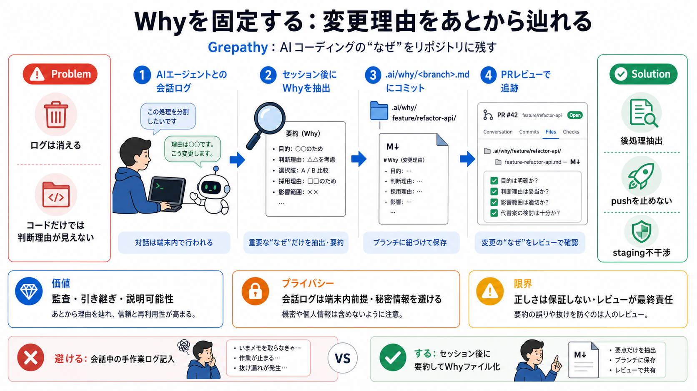

Creating a Data Retention Policy That Meets Privacy ...
This ACC Guide SM addresses creating a data retention policy to meet privacy requirements , and. One of the first steps …

AIコーディングエージェントが作る変更について、「なぜその判断になったか」を会話ログから抽出してリポジトリに残す仕組みです。
PRやコミットのコードだけでは、「計画にない方針や判断」を再説明できないことがよくあります。しかもトランスクリプト（会話ログ）は後で参照不能になることがあります。
抽出した意思決定の背景を、ブランチ単位のwhyファイル（why-pack）としてコミットします。将来のレビュアーや次のエージェントが「なぜ」を辿れます。
エージェントを途中で止めてログを手作業記入させません。セッション後にトランスクリプトを読み、判断理由を要約・抽出する設計です。
stagingを触らず、push（git push）自体も止めずに動くことを目指します。導入の障壁を下げ、既存ワークフローへ組み込みやすくします。
トランスクリプトは「Your transcript never leaves your machine（端末外に出ない）」とされます。さらに要約ルール・検査・バリデーションで安全性を担保しようとします。
生成物は .ai/why/branch.md のような形でコミットされます。コード外に、判断理由の証跡を残します。
PR内で「誰が承認したか」「計画にない方針の理由」を追跡できます。採用しなかった選択肢や逸脱も可視化されます。
mid-taskで意思決定を都度書かせる方式は、エージェントが実行しにくい経験が語られています。Grepathyは後処理抽出で運用負荷を抑えます。
抽出は「既に行われたセッション」のトランスクリプトを読み取ります。whyを、コードだけではなく会話の文脈に紐づけます。
Grepathyは「自動で正しさを保証」しません。重要コードをリファクタで消してしまう問題など、品質そのものは直接改善しないと明言されています。
「何をDecisionと見なすか」「過剰/欠落が起きるか」は、入力情報だけでは詳細不明です。ノイズが増えればレビュー負担が上がり、漏れればwhyの信用が下がります。
導入初期はレビュー観点を整備し、出力の粒度（項目数・具体度）や誤検出/欠落傾向をチームで点検するのが重要です。Grepathyは品質“強制”ではなく監査“補助”として扱うべきです。
コードだけでは見えない「なぜ」をリポジトリに定着させ、将来の開発者や次のエージェントへ文脈を引き継ぎます。最終責任はレビューにあります。
This ACC Guide SM addresses creating a data retention policy to meet privacy requirements , and. One of the first steps …
# Data Retention for AI Agents in Regulated Industries. In industries like healthcare and finance, retaining AI agent lo…
Organizations have been pushing official company skills out the door because skills look like just a markdown file, and …
Skip RAG. Your Agent Doesn't Need It. Abhay Bhargav 864 subscribers 27 likes 555 views 2 Apr 2026 RAG has become the def…
How Andrej Karpathy's LLM Wiki Is Rewriting the Rules of AI Memory. You've invested in AI agents. You've set up Claude o…